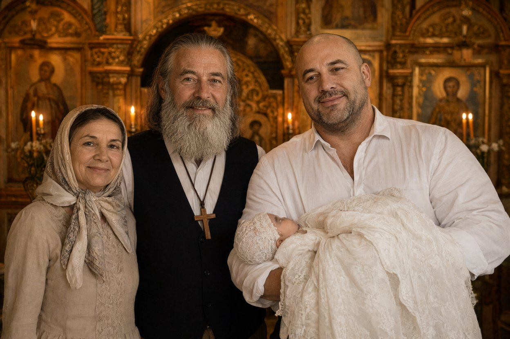

Запит: майора поліції Д.С. Волкова (кримінальне провадження № 12026090010002417). Об'єкт: публічні сторінки у Facebook — «Ярослав Бабій» (особистий профіль) і «БФ Родина — Підгір'я» (сторінка фонду). Знімки екрана виготовлено 18.10.2026 з 09:10 до 09:40, збережено на диску (додаток 1). Наводяться публікації, що стосуються предмета запиту.

Опис фото (з публікації): у храмі — чоловік (власник профілю) і жінка в світлій хустці; поруч високий масивний чоловік, голений, у темному костюмі, тримає на руках немовля в хрестильній сорочці. Позначок (тегів) осіб на фото немає. Особу чоловіка з дитиною за фото не встановлювали.
Перегляд запису (повністю, 1:10:04): статична камера, у кадрі весь час — жінка ~55 років у темній хустці, з Біблією в руках, сидить за столом біля ікони; читає псалми, називає імена з коментарів. Кадр не переривається, жінка з кадру не виходить, телефона в руках не тримає. Жінку ідентифіковано як Бабій Галину Миколаївну (порівняння з фото у профілі сторінки; у трансляції звертаються «мама Галя»).
«Реабілітаційний центр для залежних і благодійний фонд. Ми віримо, що кожен заслуговує на родину.
Пастор Ярослав і пані Галина — тато й мама для наших хлопців. Тут тебе люблять.
Ми також опікуємося самотніми людьми похилого віку: возимо продукти, ліки, до церкви, допомагаємо знайти рідних.»
Наші друзі й донори:
Інформація отримана з відкритих джерел без застосування негласних заходів. Достовірність відомостей, розміщених користувачами, не перевірялась.